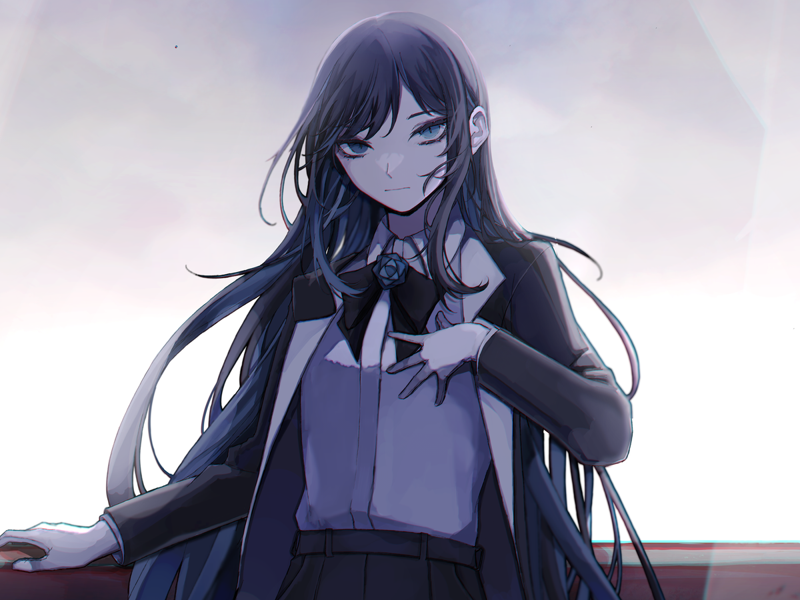

About Ado
Ado (born October 24, 2002) is a Japanese pop singer who rose to fame with her debut single "Usseewa" in 2020. Known for her powerful vocals and unique musical style, Ado quickly became a sensation among young listeners in Japan and around the world.
Her multiple characters that are designed for each song
- Naima the character used for the song useewa
- Chando Ado's main character that she uses for the public
- Idk, most of their names arent revealed or irrelevant
Career break-throughs!
- 2020: Debuted with the hit single "Usseewa", which went viral and topped charts.
- 2021: Released her first album "Kyogen", which received critical acclaim.
- Known for her energetic performances and distinctive voice.
- Collaborated with various producers and contributed to anime soundtracks.
Popular Songs
- Usseewa
- Readymade
- Odo
- Gira Gira
- Ashura-chan
Fun Facts
- Ado started posting covers of various Japanese Artist's songs shortly after releasing useewa
- She covered songs like Overdose by Natori and Kawaigutetomen
- She rarely shows her face in public, maintaining a mysterious persona.
- She covers her face because she doesnt feel comfortable showing it due to her seeing pop stars getting swarmed, especially after her first song blew up accidentally
- Her music often features themes of rebellion and self-expression.